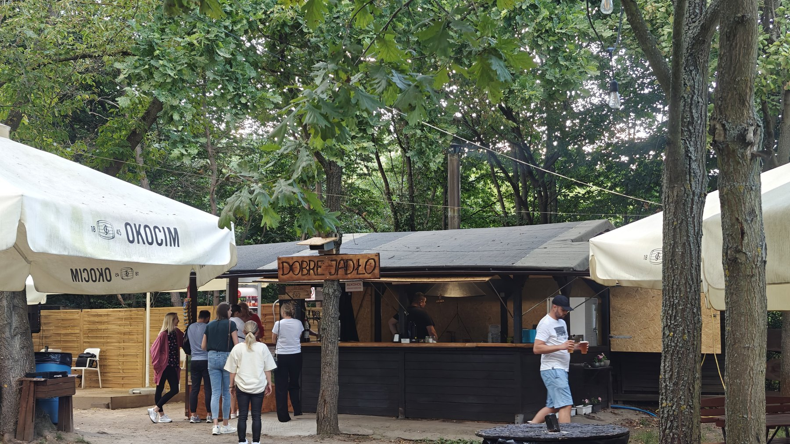

Grill Bar • Odkryta 1 • Białołęka
Wesoła Tawerna
Autentyczne jedzenie z grilla na żywym ogniu, zimne piwo i najlepsze karaoke nad Wisłą. Poczuć klimat letniego wieczoru w Warszawie.
Grill na żywym ogniu
Karaoke Warszawa Białołęka
Ogródek piwny nad Wisłą
Poznaj naszą historię
Restauracja na Białołęce z klimatem, jakiego szukasz.
Wesoła Tawerna to coś więcej niż zwykły grill bar w Warszawie. Nasza historia zaczęła się z pasji do prostego, dobrego jedzenia i spotkań na świeżym powietrzu. Położona przy ulicy Odkrytej 1, w bezpośrednim sąsiedztwie wałów wiślanych, stała się ulubionym przystankiem dla spacerowiczów i rowerzystów szukających odpoczynku.
Nasz ogródek piwny na Białołęce to idealne miejsce na relaks pod drzewami. Serwujemy klasyki z rusztu: soczystą karkówkę, chrupiącą kiełbasę i domowe frytki. Wszystko to w swobodnej atmosferze, gdzie każdy czuje się jak u siebie.
01
Autentyczny grill na żywym ogniu i świeże składniki.
02
Największy i najbardziej zielony ogródek piwny na Białołęce.
03
Imprezy z karaoke i autorska muzyka, która łączy ludzi.
Zostań gwiazdą wieczoru
Karaoke Warszawa Białołęka
Szukasz miejsca na karaoke w Warszawie? Wesoła Tawerna to centrum muzycznej rozrywki na prawej stronie Wisły! Nasze wieczory karaoke przyciągają utalentowanych mieszkańców Białołęki i nie tylko. Zapewniamy profesjonalne nagłośnienie, szeroki wybór piosenek i atmosferę, w której każdy odważy się chwycić za mikrofon.
Organizujemy również imprezy okolicznościowe i spotkania integracyjne z oprawą muzyczną. Sprawdź nasze social media, aby dowiedzieć się o najbliższych terminach śpiewania!
Warto wiedzieć
Często zadawane pytania (FAQ)
Czy w Wesołej Tawernie można zarezerwować stolik?
Tak, przyjmujemy rezerwacje telefoniczne, szczególnie na weekendy oraz wieczory z karaoke. Zadzwoń pod jeden z numerów w sekcji kontaktowej.
Czy lokal jest przyjazny dzieciom i zwierzętom?
Oczywiście! Nasz ogródek pod drzewami to idealne miejsce dla rodzin. Jesteśmy również lokalem "pet-friendly" – Twoi czworonożni przyjaciele są u nas mile widziani.
Jakie są godziny otwarcia Wesołej Tawerny?
Działamy sezonowo. Zazwyczaj jesteśmy otwarci od poniedziałku do piątku w godzinach od 16.00 do 22.00 , w soboty od 12.00 do 23.00 niedziele od 12.00 do 22.00. Dokładne godziny sprawdzisz na naszym profilu Facebook.
Czy w menu są opcje wegetariańskie?
Skupiamy się na klasykach z grilla, ale w ofercie posiadamy frytki, sałatki oraz zimne napoje i lemoniady.
Zapraszamy
Kontakt i Lokalizacja
Wesoła Tawerna - Grill Barul. Odkryta 1
03-140 Warszawa (Białołęka)
E-mail: wesola.tawerna@interia.pl
Znajdziesz nas tuż przy wale wiślanym – idealne miejsce na odpoczynek nad Wisłą.
Aktualności i wydarzenia na Facebooku